tone is most prominently found on all determiners and pronouns.
tone is most prominently found on all determiners and pronouns.Dashed lines indicate optional components.
Asterisks indicate components that can be covert.
Every clause begins with a (possibly covert) complementizer, optionally followed by a Topic, then the verbal complex precedes all the argument and adverbials. The highest clause is complement to a speech act particle.
Simplified, every clause has this shape:
[Topic] V (Adv) SO (Adv)
Toaq's clause structure is the same at the top level and in subordinate clauses. Whenever there is an embedded clause, it has the same make-up as the box labeled 'clause'.
As the diagram also shows, most components are optional, and two of the mandatory components can be unpronounced. This means that the most minimal complete sentence is a bare verb.
The two main ways of indicating sentence boundaries are:
• speech act particles (→ terminate a sentence)
• complementizers (→ start a new clause)
Another, but more situational, method is self-termination.
Toaq's tones have various syntactic functions, which will be discussed in their respective sections. The following table only gives a brief overview of the four tones and their most important functions:
|
|
a
|
verbs, predicatizers
|
|
|
á
|
determiners, pronouns, conjunctions
|
|
|
ä
|
complementizers, clause-initiating words
|
|
|
â
|
adverbial adjuncts
|
The 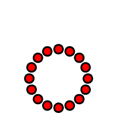 tone can be considered the unmarked, default tone. All verbs and many verbal particles carry this tone, and they can be modified using the other tones.
The tone is most prominently found on all determiners and pronouns.
The 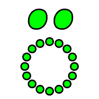 tone is found on subordinating function words, which includes non–main clause complementizers as well as a few verbal or pre-verbal particles which are followed by clauses (such as the cleft verb).
The 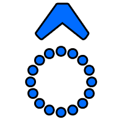 tone is almost exclusively used as a morpheme by itself to form adverbial adjuncts.
Toaq's word order is VSO.
Verbs can have up to three places.
If a verb has three places, the indirect object precedes the direct object.
S = Subject
DO = Direct Object
IO = Indirect Object
Toaq has VSO word order: arguments follow the verb and are supplied from left to right in ascending order.
Verbs can have between zero and three argument places. The vast majority have one or two.
Intransitive verbs take exactly one argument:
Transitive verbs take two arguments:
Ditransitive verbs take three arguments:
Some verbs come in multiple valencies. For example the transitive verb chuq "X eats Y" also has an intransitive version of the same spelling which lacks the object:
When a verb can take a variable number of arguments like this, it is called variadic. This is a common property among transitive verbs, but it is not a universal property among verbs in general.
Nullary verbs don’t involve any explicit participants. They merely express that an action or state is going on:
While English distinguishes between verbs, nouns and adjectives on a lexical level, Toaq unites all of these under a single part of speech: verbs. The equivalent of the English noun "language" is a verb, zu "to be a language". The English adjective "large" is rendered as the verb sao "to be large", and so on.
The following examples illustrate this point further. Note the parallel structure:
A verb that is defined to take a given number of arguments can only take that amount. The following is not a well-formed sentence:
The excessive argument súq gets stranded, because the verb cannot take any more arguments. As a consequence, the clause ends automatically, and the extra argument ends up in a new clause. This mechanism is called self-termination: A clause automatically ends as soon as it encounters something which cannot be part of it.
Self-termination can be used to escape subordinate clauses and to start new sentences, both without requiring any explicit boundary marking.
When it comes to word order, all atomic verbs have the same behavior: they move to the left of their arguments (to T), leading to VSO word order.
There is no syntactic difference between roots, compounds and loanwords. Below is one example for each stem type in verb position:
The cleft verb nä allows an arbitrary argument to be raised out of a clause into a pre-verbal subject position.
It corresponds to the English "to be such that" construction.
The cleft verb does not participate in serial verbs.
Gloss: cle
|
|
nä
|
"to be such that ..."
|
The cleft verb nä is a powerful tool for manipulating word order: it can turn the usual VSO word order into SVO and OVS; and even into SOV and OSV if nested, although this is less often useful.
The following is an example of pseudo-OVS word order:
( hóa is a resumptive pronoun. See the section on relative clauses for more information on how to refer back to the antecedent.)
If the subject of a clause is a heavy constituent, such as a content clause or a DP containing a relative clause, fronting the subject avoids center-embedding and thus makes the sentence easier to understand.
Compare the following two sentences:
The second example is easier to understand because it avoids center-embedding. If the relative clause were more complex, the effect would be even more pronounced.
The event accessor (EvA) ë takes a vP and derives a verb referring to the vP's event place.
Gloss: eva
|
|
ë
|
"to be an event of ..."
|
Most commonly, they are used as the complement of a determiner:
Name verbs are formed by the word mı followed by an arbitrary word.
The resulting expression is a verb with the meaning
"to be named <word>"
Gloss: name
mı takes a word and forms a verb that expresses the property of being named that word.
mı can be rephrased in terms of the predicatizer shu:

Quote verbs are formed by the word shu followed by an arbitrary word.
The resulting expression is a verb with the meaning
"to be the word <word>"
Gloss: word
For example:
shu is most commonly used as the complement of a determiner:
A text of arbitrary length can be quoted by enclosing it in spoken parentheses:
mo <quoted text> teo
Gloss: quote unquote
For example:
Serial verbs are condensed forms of clausal complements.
The individual component verbs form a cluster on the left of the arguments, giving serial verbs their name.
Serial verbs can have an unlimited number of component verbs.
This section deals with the most important and most powerful mechanism of the verbal complex and the main reason why it’s called the verbal complex.
Serial verbs are, in essence, a shortcut mechanism. They are like compounds in that they create shorter ways of accessing meanings by joining words (having a compound for a complex concept avoids having to paraphrase it every time). But unlike compounds, the meaning of a serial verb is completely predictable from the words that compose it, and the order they appear in. This means that a serial verb is understandable to anyone who knows the words that make it up and knows how serial verbs work, without requiring a dictionary.
While compounds are new lexemes and thus add entirely new meanings to the dictionary, serial verbs do not create new meanings, they merely combine words efficiently to express a more complex meaning and make sentences a lot shorter in the process. And, the more complex a serial verb, the less complex the rest of the sentence!
To understand serial verbs, it is useful to have some understanding of complementizer phrases.
The following pair of sentences illustrates the idea behind serial verbs:
The first sentence contains a simple verb tua "to bring about something" whose arguments are jí "I" and the content clause ꝡä jaı nháo "that they are happy". The second sentence has both verbs in the front, and the second argument is not a content clause but just nháo "she". By moving the verb out of the content clause into the verbal complex of the main clause, the content clause is no longer needed, and a level of clausal nesting is eliminated.
Below follows a syntactic analysis of both sentences:
This example uses the familiar structure of 2-place verbs covered previously. The object of tua "to cause" is a content clause (CP), which contains the statement jaı nháo "she is happy".
[TP
[T+ tua]
[vP
[DP súq]
[v'
[v Ø]
[VP
[V tua]
[CP
[C ꝡä]
[TP jaı nháo]
]
]
]
]
]
Because the sentence involves two clauses, it is more complex than the corresponding sentence that uses a serial verb.
The corresponding serial verb looks like this:
The verbs (labeled V1 and V2) move up the tree and form a cluster above the subject.
The tree also reveals how nháo ends up in the correct place, as an argument of jaı.
[TP
[T+ tua jaı]
[vP
[DP súq]
[v'
[v Ø]
[VP
[V tua]
[VP
[V jaı]
[DP nháo]
]
]
]
]
]
In general, any verb whose last argument place selects for a complementizer phrase (CP) can head a serial verb.
The argument place can be propositional:
or a property place:
Here, the difference in complexity between the two sentences is quite pronounced.
Serial verbs can have an unlimited number of component verbs. They are right-grouping:
(V1 (V2 (V3)))
Here is a relatively long one that still ends up being easy to understand:
When you see a rising tone verb followed by a falling tone verb, then you're dealing with a serial verb that is used as the complement of the determiner:
Object incorporation is a process by which a verb forms a tight unit with its object such that the two can no longer be separated. The consequence is that when the verb moves to the front of the clause, the object moves along with it.
Object incorporation results in VOS word order.
It is marked via inflection on the object, such that the usual tone carried by the head of the object (D for DPs, C for CPs) is replaced by .
Object incorporation forms a tight unit of verb and object, leading to VOS word order:
In the above example, bâq has its normal rising tone replaced by the hiatus tone. The equivalent sentence without object incorporation would be:
Another example, using a different determiner:
Or an incorporated pronoun:
The next examples show an object incorporating verb used as the complement of other determiners:
An incorporated CP is headed by a C carrying the tone:
When incorporating a DP headed by the determiner , its allomorph lo must be used. This is because replacing the raw tonal morpheme with the tonal morpheme would result in forming an adverbial adjunct.
The following is an example of an object incorporating verb as the tail of a serial verb:
Adjectives don't exist as a separate part of speech in Toaq; they are simply verbs.
However, there is a special adjectival construction which corresponds loosely to the way adjectives modify nouns in English.
To keep things simple, the text uses the word adjective interchangeably with adjectival construction.
Adjectives follow the phrase they modify.
They are separated from the preceding verb by the (usually covert) adjectival prefix kı-
The prefix is only required when the preceding verb has an object place that would otherwise trigger serialization.
The adjective itself is structurally identical to a reduced relative clause, which means that it can contain tense and aspect, but no arguments or adverbial adjuncts.
Gloss: adj
Adjectives are postpositive. The adjectival prefix kı- is rarely needed, because most of the time, the things we describe using adjectives are noun-like things, and those typically don't have object places:
When the verb preceding the adjective would form a serial verb with the adjective, the prefix kı- can be used to inhibit this behavior:
It is also possible to avoid kı- by changing the valency of the preceding verb, either by replacing it with a more noun-like lexeme (e.g. chıe "X learns to Y" > chıeche "X is a learner") or by using a prefix that affects the valency in a similar way (e.g. joe "X is skilled at Y" > tụjoe "X is good at everything").
Adjectives can be used in similar situations as relative clauses while avoiding much of the complexity of the latter:
This is less complex than the corresponding relative clause:
Adjectives are also commonly used to express possession. This involves the predicatizer po:
It can also be used to make generic compounds, using a DP headed by the generic determiner báq:
For these kinds of generic adjectivals, there is a special shortcut mechanism, which replaces the normal adjectival kı- prefix with a different, more specific, prefix:
| be- = (kı̣)po báq (gloss: ga) |
This prefix offers a less verbose alternative to the previous example:
Predicatizers are a small closed class of verbal particles which convert arguments into verbs.
Predicatizers form a tight unit with their complement, much like object incorporation, which leads to VOS-like word order.
Predicatizers are quantificationally opaque.
|
|
po
|
X is related to Y by some salient relation
|
|
|
mea
|
X is/are among the referents of Y
|
|
|
jeı
|
X is/are Y (sameness/identity)
|
The predicatizer po relates two arguments by an unspecified relation. It is glossed as "of":
po can often be paraphrased using hao "X satisfies the salient property" or "X is related to Y by the salient relation".
Imagine, for example, that A and B are out in the jungle following the trail of a rare snake. Then A says:
A slightly easier way to say the same thing would be to use a serial predicate with hao as the tail:
This trick is very useful and should be made frequent use of. However, when the complement of the predicatizer is a quantified DP, the paraphrase is no longer semantically equivalent. Predicatizers are quantificationally opaque, which means that the complement is bound in-situ rather than in the clause the predicatizer is in.
This is distinct from "There is a young dog that I want", which would be:
In the first example, the speaker is not talking about a specific dog, and any young dog will do. In the second example, there is a specific young dog the speaker wants.
The word po is very flexible. While it is basically just hao in different clothing, its special syntax enables it to be useful in different situations. For example, it can be used to form ad-hoc loose compounds:
The other two predicatizers jeı and mea deal with identity and amongness respectively.
jeı says that the complement and the subject are the same thing(s), i.e., that they have the same referent(s):
mea says that the subject's referents are among the referents of the complement:
A determiner phrase (DP) consists of a determiner (D) followed by a reduced* complementizer phrase (CP). **
Informally: DP ≈ noun
* The complementizer phrase is reduced in that its verb cannot take any arguments and no adjuncts may be attached to the vP. It also cannot contain a Topic.
** Technical: n (called little n) is an unpronounced functional head whose presence is required for semantic reasons (semantics). Learners of the language can simply pretend that the nP isn't there, and that DPs have the structure D + CPrel.
What the above pattern illustrates is that Toaq's equivalent of nouns involves a hidden relative clause. Instead of saying 'the apple' as in English, Toaq uses a construction that corresponds to 'the [thing which is an] apple' (shamu 'apple' is a verb in Toaq).
The determiner selects the first argument slot of the complement verb:
| fa ___ goes to ___ |
sá fa 'someone who goes' |
| kıa ___ is red |
sá kıa 'something which is red' |
| nam ___ is bread |
sá nam 'something which is bread' |
Apart from not being able to take arguments or adjuncts, the complement of a determiner can be complex:
Tense and aspect are optional:
The following table lists the most important determiners. Afterwards, each determiner will be discussed in more detail.
| Determiner | Meaning | |
|---|---|---|
|
◌
|
|
"X" (bound)
|
|
|
sá
|
"some X", "a X"
|
|
|
tú
|
"every X", "each X"
|
|
|
túq
|
"all X"
|
|
|
sía
|
"no X"
|
|
|
ní
|
"this X", "that X"
|
|
|
báq
|
"X in general", "X-kind"
|
|
|
hí
|
"which X", "what X"
|
|
|
hú
|
endophoric determiner
|
|
|
ké
|
exophoric determiner
|
(The lambda determiner is covered in the section on properties)
All determiners carry the rising tone.
The determiner is just the rising tone itself. In order to be pronounceable, it latches onto the following word, i.e. the first word of the complement.
is glossed as "the". This is "the" in the sense of "For every flower in this garden, there is a butterfly that likes the flower." In other words, all it does is reference a bound variable.
This is illustrated by the following example:
First, tú binds the variable kune. Then, kúne refers back to the same variable.
For another method of accessing bound variables, see the section on anaphoric pronouns.
It is also possible to use without the variable having been explicitly bound. In such instances, the variable is treated as having been bound exophorically, i.e., by the current context or the shared knowledge of the speaker and listener. (The referent may or may not already be part of the discourse.)
If no vehicle was previously mentioned, the listener must infer the referent of cháo from the context. If a vehicle was mentioned, then cháo probably refers to that vehicle.
The determiners tú and sá correspond to the quantifiers ∀ and ∃ respectively. Note, however, that while sá is a plural quantifier, tú is a singular quantifier (meaning it only quantifies over singletons).
túq 'all' refers to all the things satisfying the predicate, at once. For instance, in a situation with three cows:
sía 'no', is the negation of sá. As such, it is also a plural quantifier:
ní is the demonstrative determiner. It can be used both for tangible things that can be pointed at and for abstract things.
The determiner báq creates references to kinds:
The sentence talks about dragons in general, rather than specific dragons. It also does not claim that any dragons actually exist.
The determiner hí is Toaq's primary way of asking wh-questions. By combining it with the appropriate verbs and/or by placing the DP in the appropriate argument place, all of "who", "what", "where", "when", "why", and so on can be derived compositionally.
The endophoric determiner hú indicates that the referent of the DP was previously mentioned in the text or conversation.
The exophoric determiner ké indicates that the referent of the DP was not previously mentioned in the text or conversation.
DPs scope over DPs on their right and are under the scope of DPs on their left:
It is possible to use determiners without an overt complement. In such cases, the reduced CP (see pattern) contains nothing but an unpronounced vacuous predicate (raı 'to be something'), effectively leaving the DP unrestricted. This strategy is not available to the bare determiner because it requires an overt complement as a carrier.
DPs with a null complement are able to take relative clauses, just like normal DPs. It is helpful to be aware of the way in which the two structures are similar and how they differ:
Both examples express the same thing. The main difference between the two structures is that in the first example, the DP cannot take any arguments, and therefore self-terminates immediately, while in the second example, there is a full relative clause, which can be arbitrarily complex.
See also the section on relative clauses.
Every determiner phrase binds a variable. Determiner phrases can optionally be followed by a relative clause, which acts as a restrictor on the domain of the quantifier. When binding a variable this way, the verb following the quantifier becomes the name of the variable. Relative clauses are not part of variable names.
When the complement of the quantifier is a serial verb, only the first verb becomes the name of the variable.
A bound variable can be accessed within the scope of its quantifier in two ways:
• by repeating the name of the variable verbatim in the tone
• by using a pronoun that shares the variable's pronominal class (see below).
Every variable is bound. If a variable is not bound explicitly (by a determiner phrase), then it is treated as having been bound exophorically, i.e., by the current context, the shared knowledge or cultural background of the interlocutors, or similar.
There are two classes of pronouns:
• Personal pronouns, which are referring expressions and which aren't anaphoric
• Anaphoric pronouns: these are bound automatically whenever a verb is bound by a quantifier. Which pronoun is bound by a given verb depends on the verb's pronominal class.
All pronouns carry the tone.
|
|
jí
|
I
|
1s
|
|
|
súq
|
you (singular)
|
2s
|
|
|
nháo
|
he/she/they (singular)
|
3s
|
|
|
úmo
|
we
(I & you) |
1+2
|
|
|
íme
|
we
(I & he/she/they) |
1+3
|
|
|
áma
|
we
(I & you & he/she/they) |
1+2+3
|
|
|
súna
|
you
(multiple listeners) |
2p
|
|
|
súho
|
you
(you & he/she/they) |
2+3
|
|
|
nhána
|
they (plural)
|
3p
|
Personal pronouns are marked for number and clusivity.
Grammatically, they behave like ordinary DPs:
Every pronoun has a corresponding possessive verb, which is formed by suffixing bo to the pronoun:
The pronoun há is an impersonal animate third-person pronoun, corresponding to English "you", "one", French "on", or German "man".
| Class | Pronoun | Gloss | |
|---|---|---|---|
|
Animate
|
|
hó
|
X:anim
|
|
Inanimate
|
|
máq
|
X:inan
|
|
Abstract
|
|
hóq
|
X:abst
|
|
Descriptive
|
|
tá
|
X:desc
|
The Animate class includes words referring to living organisms and words describing actions. They bind the pronoun hó. Examples include:
• kune "dog"
• poq "person"
• tao "to do"
• chuq "to eat"
The Inanimate class includes words which refer to tangible non-living things. They bind the pronoun máq. Examples include:
• jıo "building"
• nao "water"
• nuofua "bed"
• chao "vehicle"
The Abstract class includes words which refer to abstract things and concepts. They bind the pronoun hóq:
• sıo "idea"
• juna "true proposition"
• hora "hour (unit)"
The Descriptive class includes all those words which are descriptive (adjective-like) and which can apply to more or less any object. They bind the pronoun tá
• de "beautiful"
• sao "large"
• mı "named ..."
• po "of ..."
The pronominal classes are a system of lexical animacy, not natural animacy. Which class a word belongs to depends not on the nature of the referent of an expression but on the animacy class of the expression itself.
If a person is introduced into a sentence via the DP sá jua "someone strange", the descriptive pronoun tá would then refer back to them, even though the referent itself is animate. This way of doing things ensures that there can be no ambiguity as to what class any given expression should have, because no knowledge of the referent is required. Pronominal binding is thus fully unambiguous, and humans and mechanical parsers are on an equal footing when it comes to anaphora resolution.
Every verb belongs to one of the four pronominal classes, with the following exception:
The verb raı "to be something" does not belong to any of the four pronominal classes. When it is the name of a variable, then only ráı itself can refer back to that variable (the reflexive aq and the anaphoric prefix hu- also work).
The same goes for any of the nonce variables derived via the prefix nha- (gloss var). This prefix takes an arbitrary verb and turns it into a vacuous verb to be used as the name of a variable, effectively yielding an endless supply of assignable raı-variables:
The above example uses number verbs as variables, but this works with any kind of verb.
The prefix hu- provides another back-reference mechanism: it attaches to an arbitrary head and creates an anaphoric pronoun referring to the most recent accessible phrase headed by that head. For example, to refer to the most recent DP headed by sá, one would say hụ́sa, and to refer to the most recent content clause, one would say hụ́ꝡa.
In addition to the personal pronouns and anaphoric pronouns, Toaq has two special pronouns that express reflexivity and reciprocity.
|
|
áq
|
reflexive pronoun (refl)
|
|
|
chéq
|
reciprocal pronoun (recp)
|
These pronouns refer to the subject irrespective of its pronominal class:
The pronoun áq must be used whenever possible. Other anaphoric mechanisms skip the subject argument of the clause they are in.
Recall the sentence pattern, which is repeated below for convenience:
Dashed lines indicate optional components.
Asterisks indicate components that can be covert.
A complementizer phrase (CP) is a clause.
It can either be the argument of a verb or the complement of a speech act particle.
Depending on which of the two it is, the complementizer carries the following tones:
• main clause:
• subordinate clause:
| Complementizer | Meaning | ||||
|---|---|---|---|---|---|
| Main | Subordinate | ||||
|
Declarative clause
|
|
(ꝡa)
|
|
ꝡä
|
"that"
|
|
Polar question
|
|
ma
|
|
mä
|
"whether"
|
|
Degree question
|
|
tıo
|
|
tïo
|
"how"
|
|
Relative clause
(restrictive) |
|
ꝡë
|
"which"
|
||
|
Relative clause
(incidental) |
|
jü
|
"which"
|
||
|
Lambda clause
|
|
lä
|
λ
|
||
Propositions, also called content clauses, are headed by the complementizer ꝡä (glossed comp), which corresponds to English "that":
Here, because the CP is the argument of a verb, ꝡä carries the tone. If it were the complement of a speech act particle, such as da in the following example, the complementizer would carry the tone:
When ꝡa is the complement of a speech act particle, it can be omitted:
And because da is similarly optional, the sentence can be shortened further:
The main reason not to omit ꝡa is that it is the easiest way to mark a sentence boundary, because it doesn't need to be stressed or pronounced with a specific tone (as long as it doesn't receive ):
Interrogative clauses containing the interrogative determiner hí "what" are also headed by the complementizer ꝡä:
In main clauses, the complement of wh-clauses is the speech act particle móq:
Since there is no other complementizer that wh-clauses can combine with, móq can be omitted:
Polar interrogative clauses are headed by the complementizer mä "whether":
In main clauses, the complementizer is ma:
( móq is again optional)
Degree interrogative clauses work like polar interrogatives. But instead of asking whether something is true or false, they ask about the degree to which something is the case. They are headed by the complementizer tïo:
Property clauses can be compared to infinitives in English, except that Toaq's properties are much more flexible and allow for an unlimited degree of complexity.
Property clauses correspond more or less exactly to lambda functions. However, they differ structurally in how and where variables are bound, since they are CPs syntactically.
|
lä req já raı
λx. req(x) "the property of being human" |
The lambda determiner já binds a variable whose name is the first verb of its complement. In the above example, this is the verb raı "to be something". The choice of variable is arbitrary, much like in the lambda function where the variable x was chosen.
Once bound, the variable can be reused (via ) within the property clause, which is identical to the behavior of other determiners. For example:
|
lä shao já raı ꝡä tuaja ráı
λx. want(x, {courageous(x)}) "the property of wishing oneself to be courageous" |
Property clauses are the expected argument type of property places, which are generally indicated as such in the dictionary by the word "property" in the English definition:
|
leo
=
"X tries to satisfy property Y" (or, more naturally: "X tries to be/do Y") |
Thus, to say "I try to be courageous", one could employ a property clause as follows:
As with other determiners, the complement may be covert. This has the consequence of not giving the variable a name.
The verb ıq "X satisfies property Y" is a raw property applicator. The following pair of sentences illustrates the most basic functionality of property clauses:
is logically equivalent to
Using ıq in this way offers an alternative to the cleft verb to manipulate word order.
Here is another example of a more complex property:
Invoking explicit property clauses is somewhat costly and it is desirable to avoid them when possible.
There are two main ways of doing so:
1) Simple properties can typically be avoided by using a serial verb. Instead of
one would express this using the equivalent, but shorter, serial verb construction:
2) Most verbs that expect a property argument allow the same place to be filled by a content clause instead. Doing so invokes the following interpretation rule:
|
<verb> X CP → <verb> X lä tua já CP X <verb> CP → X <verb> to bring about CP |
Using a content clause tends to make it a bit easier to track referents, because the clause is in a sense less abstract:
A relative clause (CPrel) is a CP which attaches as an adjunct to an nP.
Restrictive relative clauses are headed by the complementizer ꝡë.
Incidental relative clauses are headed by the complementizer jü.
Relative clauses follow the head noun.
The content of a CPrel equals that of ordinary CPs, with one extra condition: the relative clause must contain a reference to its antecedent. This can be achieved in one of three ways:
• the resumptive pronoun hóa (gloss: rsm)
• bound variable reference via
• an anaphoric pronoun which matches the antecedent's pronominal class
Here is a more complex relative clause:
In the above example, déo "the child" could be replaced by the resumptive pronoun hóa, but not by the animate pronoun hó, because it would refer to the dog.
Restrictive relative clauses (introduced by ꝡë) restrict the referent set of a DP by acting as a restriction on the domain of the binding quantifier. Incidental relative clauses (introduced by jü) make a side claim about an argument.
Another way of thinking about the difference is that restrictive relative clauses provide essential information for identifying what a DP refers to, while incidental clauses merely give additional information about a referent that is not essential for figuring out who or what is being talked about.
In English, incidental relative clauses are separated from the main clause with commas, while restrictive relative clauses aren't. In Toaq, the difference is always marked via different complementizers.
All CPs are able to take advantage of self-termination:
See also the section on the cleft verb.

Polarity items (Σ) negate or affirm their complement.
Their attachment site determines their scope. They usually attach to vPs or TPs.
|
|
bu
|
negation (neg)
|
|
|
jeo
|
affirmation (aff)
|
|
|
aımu
|
contrastive negation (cneg)
|
|
|
jeha
|
contrastive affirmation (caff)
|
bu is ordinary negation (¬):
jeo is the explicit absence of negation. Its pragmatic effect is similar to English "do" in affirmative clauses.
For example, after listing food that A didn't eat on their vacation, A might then continue by saying:
A clause that isn't negated is affirmed by default, so jeo is never required to make a clause positive. Therefore, using it draws special attention to the absence of negation.
aımu and jeha are the contrastive counterparts. They additionally contradict a salient proposition from the immediately preceding discourse. They are similar in function to German "doch" and French "si".
For example, if A claims that B is not familiar with Toaq, B might contradict A by answering:
And if A says to B that the film they're watching together is boring, B might contradict A by saying:
Tense (T) expresses when something happens relative to the time of utterance. Tense precedes aspect (Asp).
There are three basic tenses:
• past
• present
• future
Tense need never be overtly marked.
|
|
pu
|
past tense (pst)
|
|
|
naı
|
present tense (prs)
|
|
|
jıa
|
future tense (fut)
|
These tenses also have prefix forms, which attach to a following aspect head. This has no effect on the semantics, but it does reduce the number of stressed syllables:
Without the prefix form, the sentence would begin with three stressed falling tone syllables in a row. With the prefix, the rhythm follows a more pleasant stressed-unstressed-stressed-unstressed pattern.
In addition to the basic tenses above, there are also the following existential tenses:
|
|
sula
|
unrestricted existential tense (uet)
|
|
|
mala
|
existential past tense (epst)
|
|
|
jela
|
existential future tense (efut)
|
In contrast to the normal tenses, existential tenses don't refer to specific time intervals but to the entirety of time. The unrestricted existential tense expresses that there exists at least one moment between the beginning of time and the end of time at which the sentence is true. The past and future versions are restricted to the past or future portions respectively.
Thus, the existential tenses are weaker in affirmative statements and stronger in negated statements:
The past tense pu and the future tense jıa can additionally be marked for temporal distance, yielding remote past/future and near past/future tenses:
|
|
pujao
|
remote past tense (rem.pst)
|
|
|
pujuı
|
near past tense (near.pst)
|
|
|
jıajao
|
remote future tense (rem.fut)
|
|
|
jıajuı
|
near future tense (near.fut)
|
Aspect follows tense (if present).
|
|
tam
|
perfective aspect (perf)
|
|
|
chum
|
imperfective aspect (impf)
|
|
|
luı
|
retrospective aspect (retr)
|
|
|
za
|
prospective aspect (prsp)
|
|
|
hoaı
|
superfective aspect (sprf)
|
|
|
haı
|
subfective aspect (subf)
|
|
|
he
|
gnomic aspect (gno)
|
|
|
hıq
|
near retrospective aspect (near.retr)
|
|
|
fı
|
near prospective aspect (near.prsp)
|
The perfective aspect tam views an event as a simple whole and places the event fully within in the reference time.
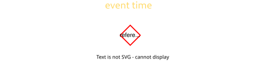The imperfective aspect chum expresses ongoing events:
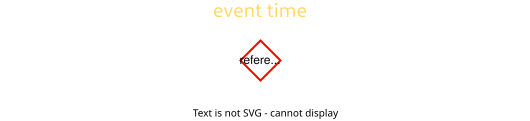The retrospective aspect luı expresses that the event is fully in the past of the reference time.
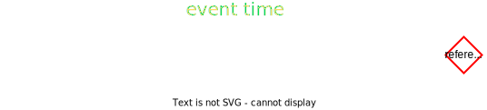The prospective aspect za expresses that the event is fully in the future of the reference time.
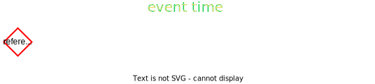The superfective aspect hoaı expresses that an event is continuing beyond an expected endpoint. It corresponds to English "still":
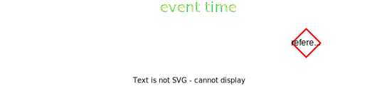The subfective aspect haı expresses that an event is taking place earlier than expected. It corresponds to English "already":
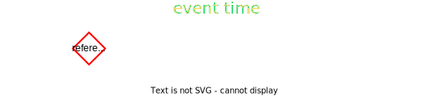The near retrospective aspect hıq expresses that an event has just happened, or happened right before the reference time.
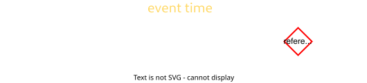The near prospective aspect fı expresses that an event is imminent, on the verge of happening, or about to happen.
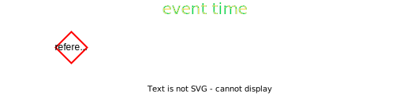The gnomic aspect he expresses general truths, how things are in general:
An aspect may be attached to a following verb as a prefix:
This is also possible if the aspect carries a tense prefix:
Modals are used to make statement about necessity and possibility. They also function as conditionals (if-clauses).
Each modality comes in two forms: indicative and subjunctive.
| Indicative | Subjunctive | |
|---|---|---|
|
Necessity
|
she | ao |
|
Possibility
|
daı | ea |
Modals optionally take a CP complement.
Modals are quantifiers over possible worlds. The CP complement restricts the quantifier:
Modal [restriction] [main clause]
This is similar to an "if ... then ..." structure:
If [antecedent] then [consequent]
Modals come in two types: indicative and subjunctive. These names are based on the fact that they correspond to English indicative conditionals and subjunctive conditionals, even though Toaq does not grammatically mark for mood.
Subjunctives are also called counterfactuals. They describe situations that are contrary to fact. They correspond to "would" and "could".
ao expresses the combination necessity + counterfactual:
This sentence implies (presupposes) that "you are not here".
ea expresses the combination possibility + counterfactual:
Modals can also be used without an overt complement. This leaves the restriction implicit and corresponds to could/would/can/must-clauses without an if-clause. In such cases, the modal carries a falling tone and mustn't be followed by nä:
Adjunct phrases attach to vPs.
They can attach on either side.
The Adjunct head is (gloss: adj)
AdjunctPs act as adverbial restrictors of the event variable of the vP.
Adverbials can appear in the following places:
V (Adv) S O (Adv)
Adverbials can be grouped into two broad categories:
• eventive adverbials
• subject-sharing adverbials
Adverbials are formed by combining the tone with a verb phrase. If the verb is intransitive, the resulting adverbial will correspond to an adverb in English. If the verb is transitive, the adverbial will correspond to a preposition, taking a complement.
| + Vintr = adverb
+ Vtrans = preposition |
Eventive adverbials allow us to add more information about the event expressed by a verb. For example, they let us specify where and when something happened, or certain semantic roles such as purpose, beneficiary, etc).
Using an adverbial in a clause has the effect of claiming that the event expressed by the main verb of the clause also satisfies the first argument place of the adverbial verb:
In this example, the arriving event is claimed to satisfy the first place of rao "X takes place at the same time as Y". The second argument place of rao is filled by kíachaq "Monday".
Because eventive adverbials describe events, the first argument of an adverbial verb must be one that can apply to events.
Here, the event is claimed to satisfy "X is inside the bathroom".
This example contains an intransitive adverbial ( daqbuaı "X has a long duration") meaning it does not take a complement. Other than that, it follows the same pattern as the previous examples.
There can be an unlimited number of adverbials in a clause:
Below is a selection of the sort of verbs that are commonly used as adverbial adjuncts:
|
|
tı
|
X is at location Y
|
|
|
nıe
|
X is inside Y
|
|
|
buı
|
X is outside Y
|
|
|
tıjuı
|
X is near Y
|
|
|
shıu
|
X is temporally before Y
|
|
|
bıe
|
X is temporally after Y
|
The following table lists examples of verbs that correspond to various semantic roles (this list is not exhaustive):
|
|
bọtua
|
X is brought about by Y
|
|
|
bọtao
|
X is intentionally caused by agent Y
|
|
|
zuo
|
X is done for purpose Y
|
|
|
nhuq
|
X happens for Y's benefit
|
|
|
fana
|
X is a motion event towards Y
|
|
|
duo
|
X happens for duration Y
|
|
|
kuı
|
X happens for reason Y
|
Subject-sharing adverbials are adverbials formed from verbs whose first argument place cannot apply to events, such as any verb expressing an action. The effect of converting such a verb using the Adjunct tone is that instead of describing the event of the main verb of the clause further like eventive adverbials, it creates a co-event whose subject (usually the agent) is the same as that of the verb of the containing clause. The main event and the co-event are claimed to take place together, either because they are one and the same event or because they form a larger compound event together:
The verb fa "to go" is an action. Therefore, the derived adverbial creates a co-event with a shared subject: the event of her running takes place together with the event of the same agent's going to the train station.
Subject-sharing adverbials are a great way to add argument places to a verb. The verb jara "X runs" does not have an object place for specifiying the destination. By using fâ, this place can be added compositionally without needing to add bloat to the definition of jara itself. This contributes to Toaq being able to function with simpler predicate definitions.
Here, kûq allows us to specify what word was being whispered, which is not part of saqsu's definition "X whispers".
Subject-sharing adverbials are efficient and versatile:
The topic specifies what a sentence is about.
The topic precedes the rest of the clause.
The topic argument is separated from the rest of the clause by the function word bï.
The topic is an optional part of every clause which specifies what the clause is about. The material which is placed in the topic may or may not also appear as an argument within the clause.
The topic can only contain referential arguments. To front quantified expressions, the cleft verb nä should be used:
The focus particle kú marks a constituent as conveying new information.
Focus is the part of a sentence that contains new or contrasting information. When you know that someone ate your last remaining banana, but not who did it, and I say to you "I ate the banana" (or "It was me who ate the banana"), the fact that someone ate the banana is known information, and the fact that it was me as opposed to someone else who did the eating is new information and carries what is called the focus of the sentence.
Toaq uses focus inflection ( kú) to focus-mark a constituent:
Since kú marks new information, it is also the appropriate way of answering wh-questions. If asked Chuq súq hí raı? "What did you eat?", the proper answer would be kú máoja "[it was] the bananafoc".
kú expresses what is known as non-contrastive focus. There is also contrastive focus, marked by the particle béı. Contrastive focus implies the negation of at least one alternative proposition. The prototypical example of when contrastive focus occurs is when correcting someone else's statement. For example, if A said "You ate the banana", then B might answer:
Focus can also be attached to other parts of speech via the focus prefix ku-:
When attached to a head, the entire phrases projected by the head receives focus.
When attaching focus to heads which are purely tonal, the focus marker steals the tone:
Apart from kú and béı, there also exist so-called focusing adverbs, a name which is based on the fact that their English equivalents involve adverbs that interact with focus. In Toaq, they don't involve any actual adverbs and there are instead different ways of realizing focus, depending on the "adverb". The following focusing adverbs exist:
|
|
tó
|
"only"
|
|
|
máo
|
"also"
|
|
|
júaq
|
"even"
|
In English, there exist pairs of sentences like "I only gave a bananaFoc to you" vs "I only gave a banana to youFoc", where the position of focus (expressed prosodically via stress) interacts with the adverb "only" to produce different meanings. This dependency is also known as association with focus.
In Toaq, the situation is simpler: the focusing adverb is simply placed in front of the focused constituent:
Focus particles scope over DPs and focus particles on their right and are under the scope of DPs and focus particles on their left:
Conjunctions are placed between two matching conjuncts of the same syntactic type.
The first type of conjunction is the plural coordinator:
|
|
róı
|
and (plural coordinator) (&)
|
This conjunction joins two DPs (or, less commonly, CPs) into a single expression which refers to the referents of both conjunct DPs taken together. For instance, jí róı súq "I and you", refers to the speaker and the listener together. It is equivalent to úmo "we (1+2)".
róı-joined expressions are equivalent to ordinary plural expressions.
ⓘ Recall the optional sandhi rules, which allow RRR to be pronounced RLR
The second type of conjunction is the clausal conjunction. It is called that because any expression involving it can always be paraphrased as a conjunction of two clauses.
|
|
rú
|
and
|
|
|
rá
|
inclusive or
|
|
|
ró
|
exclusive or
|
|
|
rí
|
or ... ? (connective question)
|
|
|
kéo
|
but
|
Almost any two matching conjuncts can be conjoined by these conjunctions, where "matching" is defined as being of the same syntactic type (DP, CP, TP, etc).
The conjunction rí asks the listener to fill in the appropriate conjunction in its place or to indicate which of the conjuncts makes the sentence true:
Because DPs and CPs are different syntactic types, examples like the following are possible:
One important syntactic type which is by default ignored by conjunctions is V, the bare verb (normally, one would instead make use of an adjectival construction). This has a big advantage:
Instead of connecting the two most local matching constituents, which would be two verbs, the conjunction instead connects two tense phrases.
The following table contains examples of the most important types of coordination:
| Type | Example | ||
|---|---|---|---|
| Determiner phrases (DP) | súq | rú | jí |
| "you and I" | |||
| Content clauses (CP) | ꝡä ruqshua | rú | ꝡä koa búı |
| "that it's raining and that it's cold outside" | |||
| Relative clauses (CPrel) | ꝡë cho hóa báq rua | rú | ꝡë geı hóa sía fuq |
| "who likes flowers and who is wearing no clothes " | |||
| Prepositions | nîe | rá | gûq |
| "in or under" | |||
| Adverbial adjuncts | bîe gújue | kéo | shîu róaıjue |
| "after February but before August" | |||
| Tense phrases (TP) | jara kúne | rú | koı jí |
| "The dog runs and I walk" | |||
| Verbs (V) | loq | ra | koa |
| "hot or cold" | |||
|
|
conjunction |
default precedence:
locally conjoins any two matching types |
| conjunction |
force most local scope:
allows coordinating DP with CP, and V with V. |
|
| conjunction |
skip first possible attachment site
|
At times, the default attachment behavior of conjunctions is not what is needed. For example, sometimes, it may be necessary to join a DP with CP. This is done by using a tone on the conjunction:
Or if you want to connect verbs and an adjectival construction isn't cutting it:
A slightly more unusual effect can be achieved by using the tone on a conjunction. This has the effect of skipping the first conjunct which would be picked out by the default rules, and instead using the next possible conjunct:
Finally, the prefix na- converts transitive verbs into conjunctions:
|
|
na-
|
V → conjunction conversion
|
This prefix makes examples like the following possible:
This can be paraphrased as:
More examples:
The speech act phrase (SAP) is the highest phrase of a sentence.
Every Toaq sentence is an SAP.
Speech acts are indicated by sentence-final particles.
These particles specify the illocutionary force of an utterance, i.e., whether a sentence is an assertion, a command, a question, and so on.
A speech act particle ends the sentence, at which point any further material necessarily belongs to the next sentence. This means that apart from their semantic content, speech act particles also function as sentence boundary markers at a mere structural level.
The speech act particles are:
|
|
da
dâ |
assertive (asrt)
explanatory assertive (expl) |
|
|
ka
|
performative (perform)
|
|
|
móq
môq |
interrogative (int)
rhetorical interrogative (rhet.int) |
|
|
ba
|
optative (opt)
|
|
|
nha
|
promissive (prom)
|
|
|
doa
|
permissive (perm)
|
|
|
ꝡo
|
admonitive (adm)
|
da is the default speech act particle. It is optional and automatically implied when the complement CP contains no question words. Its communicative purpose is to mark a sentence as an assertion.
This is identical in meaning to:
However, it can still be productive to use an explicit da: it serves as an unambiguous sentence boundary, and it can also be helpful for signaling to the listener that the current sentence is complete, especially when it isn't obvious from the structure of the sentence that the speaker does not intend to add more arguments.
When leaving da implicit, then, in order to avoid sentence boundary ambiguities, the following sentence should begin with a main clause complementizer (usually ꝡa), or a conjunction like keo "but".
When da carries the rising-falling tone , its meaning changes from a mere assertion to an explanation. For example, if A asks "Why aren't you working on your project?", B might answer:
The speech act particle ka "hereby" creates performative statements. These are true by virtue of being uttered. Common examples are apologies, greetings, and pronouncements.
The interrogative móq is used to form questions. These questions can be polar questions (yes-no questions, i.e. sentences with a ma complementizer):
or wh-questions (sentences with one or more hí in the main clause):
Whenever the main clause contains at least one hí or begins with an interrogative complementizer, móq can be omitted:
With the tone, móq turns into a rhetorical question, i.e. a question which does not expect an answer:
The optative ba expresses wishes, hopes and general purpose imperatives.
The promissive nha expresses promises and threats:
The permissive doa is used to grant permission or to make an offer:
The admonitive ꝡo expresses warnings by providing information the listener should heed:
This pattern is a variation on the cleft verb.
The retroactive CP cleft takes an entire ongoing sentence, wraps it up in a CP, and then places this CP in the subject position of a cleft verb.
Gloss: retrocle
For example:
A parenthetical is a piece of text inserted within another text. The inserted text is surrounded by spoken parentheses:
kïo <inserted text> kı
For example:
The vocative particle hóı marks a DP as the addressee of the current utterance.
Vocative phrases can stand freely in the clause and do not function as arguments.
Gloss: voc
For example:
Interjections are syntactically primitive particles which express full propositions all by themselves. They do not interact with other words.
Where applicable, an interjection can be pronounced with a rising intonation to inquire about the listener’s situation regarding the emotion or mental state expressed by the interjection. For instance, one might say áhı "are you feeling pain?" when someone stubs their toe.
Similarly, where applicable, an interjection can be pronounced with a rising-falling intonation to express empathy regarding the state expressed by the interjection. For example, ôro "that must suck for you".
Emotive interjections express the emotions and sensations of the speaker.
|
|
aja
|
happiness, "yay"
|
|
|
ıfu
|
disgust, "ew"
|
|
|
ume
|
pleasure, "mmm"
|
|
|
ahı
|
pain, "ouch"
|
|
|
ufu
|
relief, "phew"
|
|
|
oro
|
annoyance, exasperation, "ugh"
|
|
|
epı
|
excitement
|
|
|
kudao
|
longing, yearning, craving
|
Cognitive interjections express the state of knowledge and thoughts of the speaker.
|
|
a
|
discovery, "ah"
|
|
|
ua
|
"wow"
|
|
|
obe
|
surprise, "oh"
|
|
|
upa
|
admitting a mistake, "oops"
|
|
|
oaı
|
concern or realization of a problem, "uh-oh"
|
|
|
ubaı
|
"alas"
|
|
|
chıro
|
"darn", "f*ck", "sh*t"
|
|
|
bege
|
"meh", indifference
|
Conative interjections are directed at another person. They are aimed at getting someone’s attention or they demand an action or response from someone.
|
|
enı
|
"here", "take this", "look at this"
|
|
|
aıba
|
"come on", "let's go", encouragement, enticement
|
|
|
hıchu
|
soliciting a response
|
|
|
oe
|
"hey", getting someone's attention
|
|
|
sheba
|
"clear the way", "move", "excuse me"
|
Phatic interjections are used in the establishment and maintenance of communicative contact. They express one's attitude towards ongoing discourse and are used in various interactional routines.
|
|
nho
nhó |
"yes"
"is that so?" |
|
|
zı
zí |
"no"
"isn't it?" |
|
|
jadı
|
"hello"
|
|
|
shadı
|
"welcome"
|
|
|
kıjı
|
"thanks"
|
|
|
ına
ína |
"roger", "got it", "understood"
"understood?" |
|
|
ınha
ínha |
"will comply"
"are you going to comply?" |
|
|
kushe
|
"sorry"
|
|
|
jaga
|
"congratulations", "I'm happy for you"
|
|
|
chacha
|
"go ahead", "alright", giving permission
|
|
|
uq
|
"mhm", signifying that you're still following along
|
|
|
eju
|
"let's see...", searching, remembering, calculating, deciding
|
|
|
ele
|
responding or commenting on a question: "I don't care either way", not leaning to either side
|
|
|
boju
|
requesting to take the floor, "may I speak?"
|